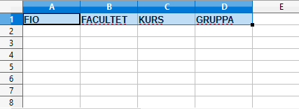
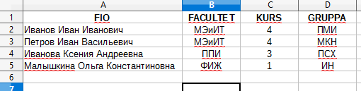
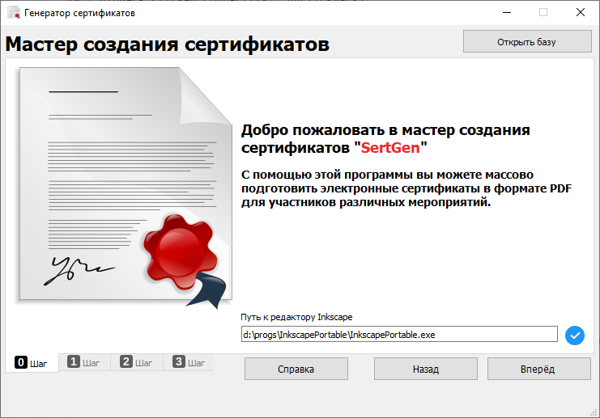
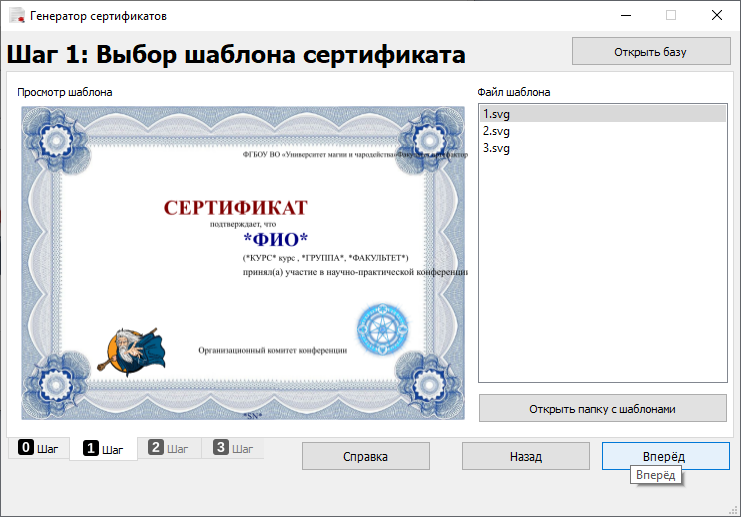
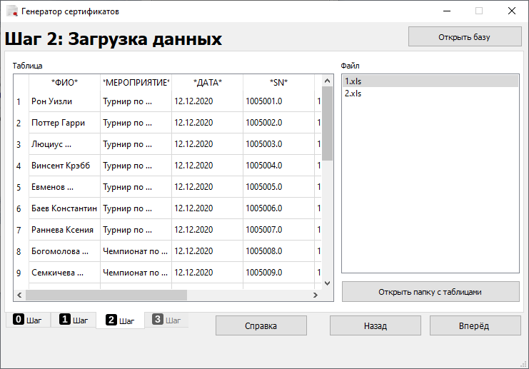
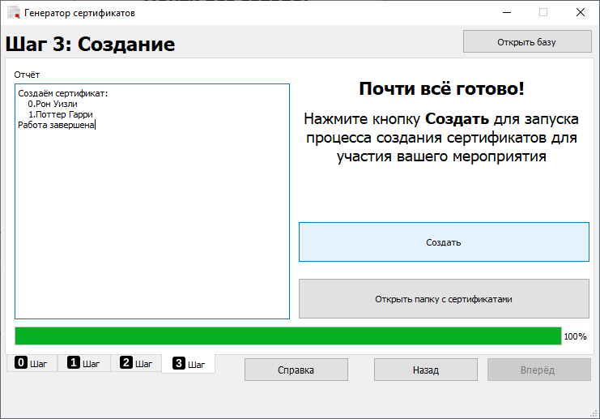

Генератор сертификатов
Генератор сертификатов - программное обеспечение для автоматизации процесса создания электронных документов (сертификаты, грамоты, дипломы и т.п.), подтверждающих участие в каком-либо мероприятии (конференция, семинар и т.п.).
Инструкция
Массовое создание электронных документов включает в себя 3 основных этапа:
- Подготовка файла с информацией об участниках мероприятия.
в формате табличного процессора, например Microsoft Excel (xls)
-
Подготовка шаблона электронного документа.
только в формате SVG, подготовленном в векторном редакторе
- Генерация электронных документов для всех участников мероприятия.
только в формате pdf
1. Подготовка файла с информацией об участниках мероприятия.
- Запустите табличный процессор, например LibreOffice Calc или Microsoft Excel.
- Разместите в первой строке заголовки столбцов с данными, помещаемыми в сертификат.
Например в ваших сертификатах должна отразиться следующая информация:
ФИО участника, факультет, курс и группа.
Для этого в первой строке можно внести следующие данные:
FIO, FACULTET, KURS, GRUPPA.

Слова из первой строки позднее необходимо будет разместить в шаблоне сертификата.
- Далее внесите сведения об участниках мероприятия

- Сохраните файл форматe: XLS
2. Подготовка шаблона электронного документа.
- Запустите программу Генератор сертификатов, если она еще не запущена.
- Ознакомьтесь с информацией мастера создания сертификатов и перейдите к следующему шагу, кнопкой Вперёд (при необходимости укажите место размещения векторного редактора Inkscape).

- Выберите шаблон сертификата из списка и перейдите к следующему шагу

- Выбреите табличный файл с данными участников мероприятия

- Запустите процесс создания сертификатов, кнопкой Создать и дождитесь окончания работы программы.

Copyright 2021